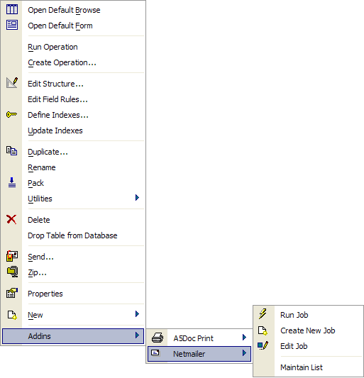
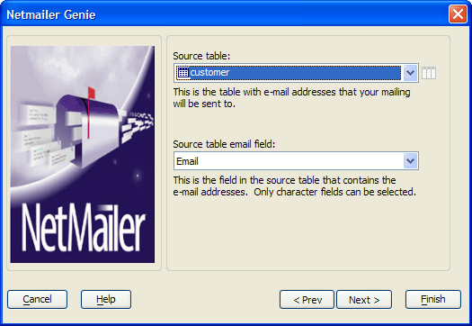
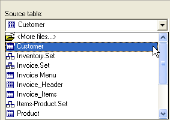
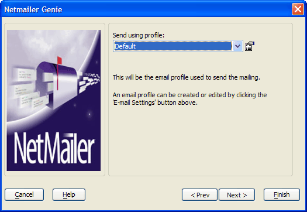
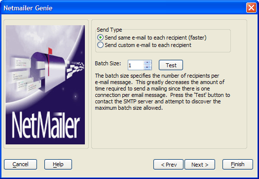
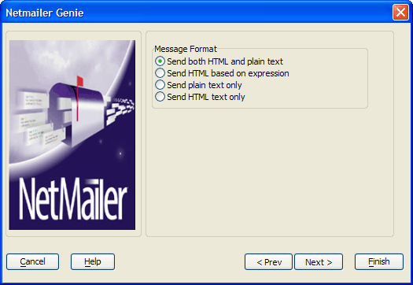
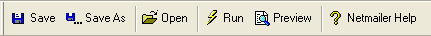

Using Netmailer
You can get started using Netmailer by performing the following steps:
Start Alpha Five and open a database.
Right-click on a table or set, and select Addins > Netmailer.

From the right-click menu, you can create, edit, run Netmailer jobs, and maintain Netmailer lists ( Netmailer Professional only).
In the next procedure, you create a new Netmailer job, using the Netmailer Genie.
You use Alpha Five Netmailer to create and send bulk email, and to maintain your email lists. In the first procedure, you learn how to specify your requirements for a new emailing job.
To create a new Netmailer job:
Open the AlphaSports database.
Click the Exit AlphaSports button in the menu bar. The AlphaSports Control Panel opens.
In the Control Panel, right-click on the Customer table, and select Addins > Netmailer > Create New Job. The Netmailer Genie appears.

In the Source Table drop-down list, select a table or set, or select "
" to locate any .DBF or .SET file as a data source for your mailing.

To create a Netmailer job, you must specify a table or set with a field containing email addresses. Select the field in the source table containing the email addresses for your mailing list from the Source table email field list and click Next. The Email Profile window appears.

You use the Email Settings dialog to create or edit an email profile for your mailings. With multiple email profiles you can have multiple email accounts and different sending and receiving preferences. For example, you might define different email profiles to separate promotional mailings from invoice mailings, or the mailings for one business account from another. To create an email profile, click
 to display the <span class=Screen>Email Settings</span> dialog.
to display the <span class=Screen>Email Settings</span> dialog.
You also can access your email profiles by selecting View > Settings > System > Email from the Alpha Five menu bar.Click Next >. The Netmailer Genie appears.

Use Send Type to specify whether to send the same or a custom message to each recipient. The options are:
- "Send same email to each recipient"
- "Send custom email to each recipient". NetMailer makes a separate email and SMTP connection for each address in the source table. This takes longer than sending the same email message to every recipient. Selecting custom email disables the batch option.
Keep the default selection: "Send same email to each recipient".
Specify a Batch Size of 25. The batch size specifies the number of recipients for each copy of the message. For example, if you specify a batch size of 25, Netmailer sends one message to 25 recipients, making only one server connection.
 Note : Spam filters
might block the delivery of batch mailings or put them in bulk folders.
Note : Spam filters
might block the delivery of batch mailings or put them in bulk folders.
Click the Test button. Netmailer contacts your SMTP server, and, if your SMTP server supports this feature, determines the maximum batch size allowed.
Adjust the batch size number to 1, and click Next.
In the next window, you select whether to send your message as plain text, HTML, both, or HTML based on an expression.

If you select "Send both HTML and plain text", the recipient email client determines which version to use.
If you select "Send HTML based on an expression", you can use the Expression Builder and type in the expression that Netmailer uses to determine whether to send a plain text or HTML message to a recipient. The HTML expression must evaluate to a logical value. If the HTML expression evaluates to true (.T.), Netmailer sends HTML, otherwise (.F.) it sends plain text.
Select "Send both HTML and plain text", and click Next > Finish.
The Netmailer Genie closes and the <span class=Screen>Netmailer Job Editor</span> and toolbar appear.

See Also
Editing Netmailer Job Parameters